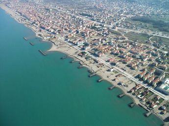

SEHRİM
İnsan, yaşamına derin çizgilerin nerede atılacağını bilseydi; oralara ilk gidişini, o kentlerle ilk karşılaştığı anı asla unutmazdı... Karasu'da bu duyguyu hissedecek ve yaşayacaksınız... Doğasıyla, ortamıyla, huzuruyla ve hepsi birbirinden güzel evleriyle Türkiye'nin en mükemmel tatil yerlerinden biri olan Karasu'yu, hangi mevsimde orada olursanız olun, keyifle gezecek ve seveceksiniz...
Karasu; Karadeniz ve Marmara Bölgesi’nin kesişiminde yer alan Sakarya iline bağlı, güzide bir ilçedir. Karasu; her iki bölge ikliminin görüldüğü, doğal ve tarihi güzellikleri ile Türkiye’nin nadide turizm merkezlerinden biri olma ayrıcalığına sahiptir.
Türkiye’nin metropolitan şehirlerinden Istanbul’a yakınlığı ile dikkat çeken Karasu'da Karadeniz iklimini, başka bir yerde bulamayacağınız huzuru, onun eşsiz maviliğinde ve yeşilliğinde bulabilir, farklı bir tatil deneyimi yaşayabilirsiniz.
Sakarya'ya 48 km uzaklıkta yer alan Karasu; yoğun şehir hayatından biraz olsun uzaklaşıp, doğanın keyfini yaşamak isteyenler için en doğru adres olma özelliğini de taşıyor. Dingin ortamı, görkemli çam ağaçları, bahçeleri çiçekle bezenmiş iki katlı evleri, denizi, kumu ve güneşi ile sizi adeta büyüleyecek.
Deniz seviyesinden 31 metre yükseklikte olan Karasu; 424 km2lik bir yerleşim alanında 1 Merkez Belediye 40 Mahalle bulunmaktadır. Merkezi 29.000 nüfuslu olup, toplamda 54.000 nüfusa sahip, eşi benzeri olmayan bir ilçedir.